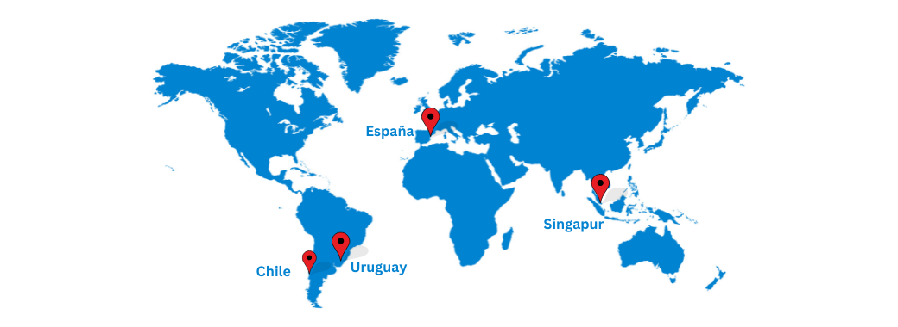

Introducción
¿Donde?
Decidimos realizar la práctica en VU Security. VU Security es una empresa de ciberseguridad internacional que cuenta con más de 150 empleados distribuidos geográficamente alrededor de 20 paises y 3 continentes que se dedidca a desarrollar productos de Ciberseguridad, Identidad digital y prevencion de fraudes. En ésta practica en particular, como ejemplo, 4 personas involucradas en la practica se encuentran en 4 paises y husos horarios diferentes.
¿Cómo?
¿Cómo elegimos realizar la práctica en ésta empresa? Realizamos un repaso de las distintas problemáticas que observabamos en nuestros lugares de trabajo, colegios, institutos y organizaciones del sector privado. Nos posicionamos en buscar la que mayor desafío nos represente en cuanto a lo tecno-pedagógico y fuimos por la problemática encontrada en la empresa.
¿Por qué?
Comparando las distintas problemáticas encontramos que la seleccionada tenía un gran potencial para aprovechar todas las aristas de un tecnólogo educativo, la implementación de un EVA, el diseño y curación de material instruccional digital y el acompañamiento pedagógico en el proceso y las actividades propuestas mediadas por la tecnología. La varidedad de recursos tecnopedagogicos aplicables como laboratorios prácticos y herramientas ya existentes corporativas hacía que se viera como terreno fértil para la práctica, tanto en terreno sincrónico como asincrónico.
¿Cuál es el contexto de la problemática dentro de la empresa?
La empresa tiene varias áreas y entre ellas una de soporte técnico a clientes externos. Los analistas de soporte se encuentran en todo el mundo y atienden diversos incidentes de seguridad. Si bien el conocimiento de los productos propios de la empresa poseen una curva de aprendizaje y un programa formal para adquirir dicho conocimiento, hay tecnologías de base sobre las que se ejecutan dichos productos que no son conocidos por todos.
Éstos conocimientos básicos son fundamentales y de gran impacto a la hora de entender y resolver los incidentes de seguridad de los clientes. Y la falta de un proceso de formación sobre 2 de esas tecnologías (Linux y Tomcat) en el proceso de onboarding de los analistas hace que se vuelva en un riesgo detectado por la empresa y no ha sido abordado por dificultades técnicas y geográficas.
Objetivos:
- General: Implementar un Entorno Virtual de Aprendizaje (EVA) y el diseño de material instruccional sobre Linux y Tomcat en la empresa de ciberseguridad internacional VU-Security, con el fin de adecuar el proceso de aprendizaje en la etapa de onboarding del personal del área de soporte de aplicaciones. - Específicos:
- Identificar las fortalezas y debilidades del aspecto formativo del proceso de onboarding del personal del área de soporte de aplicaciones en la empresa VU-Security y los recursos ya disponibles.
- Diseñar un Entorno Virtual de Aprendizaje (EVA) que permita la formación efectiva del personal de soporte de aplicaciones, utilizando herramientas de formación en línea, simuladores y casos prácticos, tanto existentes como creadas por nosotros.
- Diseñar y curar el material instruccional en distintos formatos digitales para potenciar el proceso de aprendizaje en la etapa inicial de los recursos del área.
- Crear un espacio “bitácora” para compartir la documentación pedagógica con los docentes.
- Diseñar instrumentos para evaluar inicialmente el impacto de la implementación del EVA en el personal, en la práctica de resolución de incidencias, el análisis de métricas de desempeño y la retroalimentación de los usuarios como evidencia pedagógica.